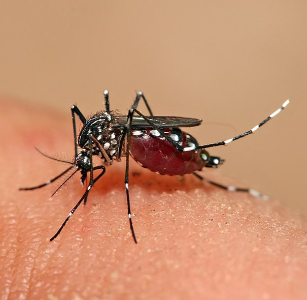

Vector de enfermedades transmitidas por mosquitos

El Aedes aegypti es un mosquito que se encuentra ampliamente distribuido en Puerto Rico y otras regiones tropicales. Se reproduce en agua estancada y vive cerca de los humanos, tanto en exteriores como en interiores. 1
Estos virus se transmiten cuando una hembra infectada pica a una persona. Las enfermedades pueden causar síntomas como fiebre, dolor de cabeza, dolores musculares o, en casos graves, complicaciones severas. 2
El mosquito pone sus huevos sobre la superficie del agua en recipientes artificiales o naturales. Los huevos eclosionan y pasan por etapas de larva y pupa antes de convertirse en adultos en tan solo unos días. 3
En Bugs Or Us PR evaluamos la propiedad para ubicar criaderos y aplicar tratamientos estratégicos para reducir la presencia de Aedes aegypti y minimizar la transmisión de enfermedades, siempre priorizando la seguridad de su familia y mascotas.
Solicitar Servicio Profesional